查找的基本概念 链接到标题
-
查找表: 查找表(Search Table)是同一类型数据元素的集合.
-
关键字: 数据元素中某个数据项的值，又称为键值，可以标识一个数据元素，也可以标识一个记录的某个数据项，称为关键码.如果此关键字可以唯一的标识一个记录，则称此关键字为主关键字(Primary Key),对不同地记录，主关键字均不同，主关键字所在地数据项称为主关键码.对于可以识别多个数据元素地关键字，称之为次关键字(Secondary Key)，次关键字可以理解为是不以唯一标识一个数据元素地关键字，对应地数据项是次关键码。
-
查找: 查找是根据某个给定的值，在查找表中找到一个关键字等于给定值的记录或数据元素，如果表中存在这样的元素，则称查找成功，否则查找失败。
-
动态查找表与静态查找表: 若在查找的同时对表做修改操作，则相应的表称为动态查找表，否则称之为静态查找表。
- 静态查找表是只作查找操作的查找表，主要操作是查询某个特定数据元素是否在表中，或者检索某个特定的数据元素和各种属性
- 动态查找表是在查找过程中同时插入查找表中不存在的数据元素，或者从查找表中删除已经存在的某个数据元素。
-
平均查找长度: 为确定记录在查找表中的位置，需要和给定值进行比较的关键字个数的期望值，称为查找算法在查找成功时的平均查找长度。
线性表的查找 链接到标题
顺序查找 链接到标题
顺序查找的过程为: 从表的一端开始，依次将记录的关键字和给定值进行比较，若某个记录的关键字和给定值相等，则查找成功，反之，若扫描整个表后，仍未找到关键字和给定值相等的记录，则查找失败。
数据元素类型定义:
typedef struct{
KeyType key; //关键字域
InfoType otherinfo; //其他域
}ElemType;
typedef struct{
ElemType *R; //存储空间基地址
int length; //当前长度
}SSTable;
假设从 1 位置开始查找，0 位置不用，查找算法如下:
int Search_Seq(SSTable ST,KeyType key){
for(i=ST.length;i>=1;--i){
if(ST.R[i].key == key) return i;
}
return 0;
}
在上面的算法中，每一步都需要检测整个表是否查找完毕，即需要判断 i>=1 是否成立，改进此算法，可以增加一个哨兵，例如 ST.R[0]关键字赋值 key，如下例所示:
int Search_Seq(SSTable ST,KeyType key){
ST.R[0].key = key;
for(i=ST.length;ST.R[i].key != key;--i);
return i; //返回0代表没找到
}
算法分析 链接到标题
设置监视哨，可以免去查找过程中每一步进行检测整个表是否查找完毕，实践证明，这个改进能使顺序表在大于 1000 长度的表中，进行一次查找所需的平均时间减半，两个时间复杂度都为 O(n)。
顺序查找的优点: 算法简单，对表结构无要求。
顺序查找的缺点: 平均查找长度较大，查找效率低，当 n 很大时，不宜使用顺序查找。
折半查找 链接到标题
折半查找也称二分查找，它是一种效率较高的查找方法，但折半查找要求线性表必须采用顺序存储结构，而且表中元素按关键字有序排列。
折半查找的过程 链接到标题
从表的中间记录开始，如果给定值和中间记录的关键字相等，则查找成功，如果给定值大于或小于中间记录的关键字，则在表中大于或小于中间记录的那一半中查找，重复操作。
算法步骤 链接到标题
为了标记查找过程中每一次的查找区间，分别用 low 和 high 表示区间的上下限，用 mid 表示区间的中间位置。
-
置查找区间初值，low 为 1，high 为表长。
-
当 low 小于等于 high 时，循环执行以下操作:
- mid 取值为 low 和 high 的中间值
- 将给定值 key 与中间位置记录的关键字进行比较，若相等则查找成功，返回中间位置 mid
- 若不相等则利用中间位置记录将表对分成前、后两个子表，如果 key 比中间位置记录的关键字小，则 high 取为 mid-1，否则 low 取为 mid+1.
-
循环结束，说明查找区间为空，则查找失败，返回 0.
算法代码 链接到标题
int Search_Bin(SSTable ST,KeyType key){
low=1;
high=ST.length;
while(low <= high){
mid = (low+high)/2;
if(key == ST.R[mid].key) return mid;
else if(key < ST.R[mid].key) high=mid-1;
else low=mid+1;
}
return 0;
}
算法分析 链接到标题
折半查找的过程可用二叉树描述，树中每一结点对应表中一个记录，但结点值不是记录的关键字，而是记录在表中的位置序号，把当前查找区间的中间位置作为根，左子表和右子表分别作为根的左子树和右子树，由此得到的二叉树称为折半查找的判定树。
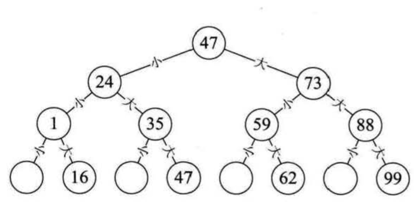
折半查找法在查找成功时进行比较的关键字个数最多不超过树的深度，具有 n 个结点的判定树深度为$log_2n+1$折半查找的时间复杂度为$O(log_2n)$.
- 折半查找的优点: 比较次数少，查找效率高
- 折半查找的缺点: 只能用于顺序表查找，查找前需要排序。
插值查找 链接到标题
折半查找是每次将查找区间缩小 1/2 进行查找，如果要在取值范围 0-10000 之间 100 个元素从小到大均匀分布的数组中查找 5，我们自然考虑从数组下标较小的开始查找。
折半查找公式 $mid=(low+high)/2$
经过变换后可以得到 $mid=low+1/2(high−low)$
这个等式可以改进为 $mid=low+((key−a[low])/(a[high]−a[low])(high−low))$
将 1/2 改为了 $(key−a[low])/(a[high]−a[low])$
这种方法就是插值查找法 插值查找是根据要查找的关键字 key 与查找表中最大最小记录的关键字比较后的查找方法，其核心就在于插值的计算公式。
mid = low + (high-low) * (key-a[low]) / (a[high]-a[low]); //修改折半查找的mid
斐波那契查找 链接到标题
折半查找是每次查找总是一分为二，插值查找是对折半查找的改进，使其在数据分布均匀情况下查找效率更高，而斐波那契查找，利用了黄金分割原理来实现，斐波那契数列如下:
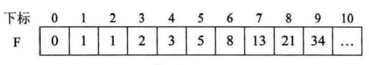
斐波那契搜索就是在折半查找的基础上根据斐波那契数列进行分割的，在平均性能上来说，斐波那契查找要由于折半查找，但在最坏情况下，例如 key=1，那么始终处于左侧长半区查找，查找效率就低于折半查找。
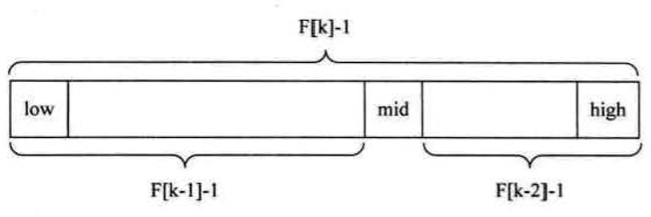
斐波那契查找算法的核心在于:
- key 值与第 mid=（low+high）/2 相等，mid 位置的元素即为所求；
- key 值大于第 mid=（low+high）/2，则令 low=mid+1；
- key 值小于第 mid=（low+high）/2，则令 high=mid-1。
示例代码 链接到标题
int Fibonacci_Search(int *a,int n,int key){
int low,high,mid,i,k;
low=1; //最低下标为记录首位
high=n; //最高下标为记录末位
k=0;
while(n > F[k]-1) k++; //计算n位于斐波那契数列的位置
for(i=n;i<F[k]-1;i++) a[i]=a[n]; //将不满的数值补全
while(low<=high){
mid = low+F[k-1]-1; //计算当前分隔的下标
if(key<a[mid]){
high = mid-1;
k=k-1;
}else if(key > a[mid]){
low=mid+1;
k=k-2;
}else{
if(mid <= n) return mid;
else return n;
}
}
return 0;
}
线性索引查找 链接到标题
前面的几种查找方法都是基于有序的基础之上的，如果数据集增长很快，要保证记录全部按照当中某个关键字有序，时间代价很高，所以这种数据通常按先后顺序存储，对于这种查找表，需要利用索引来快速查找数据。 索引是为了加快查找速度而设计的一种数据结构，索引就是把每一个关键字和它对应的记录相关联的过程，一个索引由若干个索引项构成，每个索引项至少应包含关键字和其对应的记录在存储器中的位置等信息，索引技术是组织大型数据库以及磁盘文件的一种重要技术。 索引的分类: 线性索引、树形索引、多级索引，线性索引就是将索引集合组织为线性结构，也称为索引表。
稠密索引 链接到标题
稠密索引是指在线性索引中，将数据集中的每个记录对应一个索引项，如下图所示:
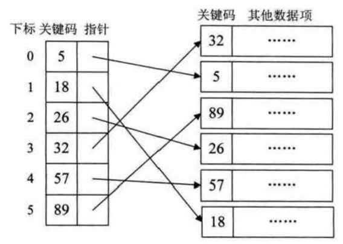
稠密索引要应对的可能是成千上万的数据，因此对于稠密索引这个索引表来说，索引项一定是按照关键码有序的排列，索引项有序意味着，在查找关键字时，可以用到折半、插值、斐波那契等查找算法，但如果数据集非常大，意味着索引也得同样的数据集长度规模，对于内存有限的计算机来说，可能需要反复访问磁盘，查找性能大大下降。
分块索引 链接到标题
稠密索引因为索引项与数据集的记录个数相同，所以空间代价很大，为了减少索引项的个数，可以对数据集进行分块，使其分块有序，然后再对每一块建立一个索引项，从而减少索引项的个数。
分块有序，是把数据集的记录分成了若干块，并且这些块需要满足两个条件:
- 块内无序，即每一块内的记录不要求有序
- 块间有序，例如要求第二块的所有记录的关键字均大于第一块中所有记录的关键字，块间有序，才有可能在查找时带来效率。
对于分块有序的数据集，将每块对应一个索引项，这种索引叫做分块索引。
- 最大关键码，它存储每一块中的最大关键字，这样的好处就是可以使得在它之后的下一块中的最小关键字也能比这一块最大的关键字要大。
- 存储了块中的记录个数，以便于循环使用。
- 用于指向块首数据元素的指针，便于开始对这一块中记录进行遍历。
分块查找 链接到标题
分块查找又称为索引顺序查找，这是一种性能介于顺序查找和折半查找之间的一种查找方法，在分块索引表中查找，分为两步进行:
- 在分块索引表中查找要查关键字所在的块
- 根据块首指针找到相应的块，并在块中顺序查找关键码。
倒排索引 链接到标题
倒排索引源于实际应用中需要根据属性的值来查找记录。这种索引表中的每一项都包括一个属性值和具有该属性值的各记录的地址。由于不是由记录来确定属性值，而是由属性值来确定记录的位置，因而称为倒排索引(inverted index)。
索引项的通用结构是次关键码、记录号表，其中记录号表存储具有相同次关键字的所有记录的记录号 (可以是指向记录的指针或者是该记录的主关键字)。
树表的查找 链接到标题
折半查找效率虽然较高，但是由于折半查找要求表中记录按关键字有序排列，且不能用链表做存储结构，因此当表的插入或删除操作频繁时，为了维护表的有序性，需要移动表中很多记录，导致额外浪费时间。 若要对动态查找表进行高效率的查找，可以采用几种特殊的二叉树作为查找表的组织方式。
二叉排序树 链接到标题
二叉排序树又称为二叉查找树，它是一种对排序和查找都很有用的特殊二叉树。
二叉排序树的定义 链接到标题
二叉排序树或者是一棵空树，或者是具有下列性质的二叉树:
- 若它的左子树不空，则左子树上所有结点的值均小于它的根结点的值。
- 若它的右子树不空，则右子树上所有结点的值均大于它的根结点的值。
- 它的左、右子树也分别为二叉排序树。
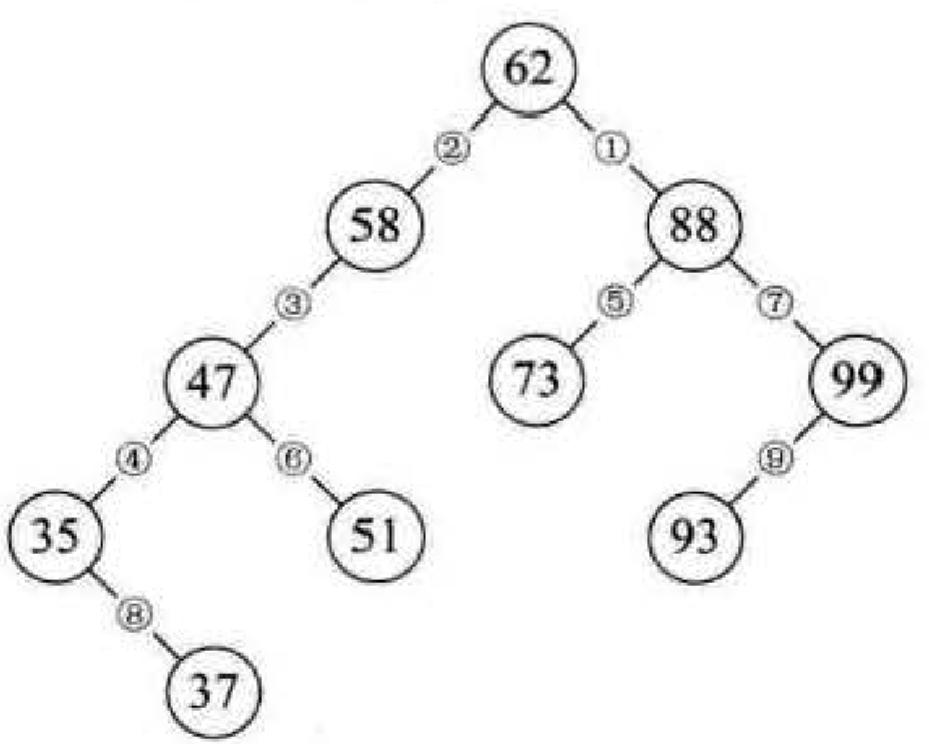
例如上图是对序列{62，88，58，47，35，73，51，99，37，93}进行构造的二叉排序树。
二叉排序树的二叉链表存储结构 链接到标题
typedef struct{
KeyType key; //关键字项
InfoType otherinfo; //其他数据项
}ElemType;
typedef struct BSTNode{
ElemType data; //数据域，包括关键字和其他数据项
struct BSTNode *lchild,*rchild;
}BSTNode,*BSTree;
二叉排序树的查找 链接到标题
二叉排序树可以看作一个有序表，因此在二叉排序树上进行查找和折半查找类似。
算法步骤 链接到标题
-
若二叉排序树为空，则查找失败，返回空指针
-
若二叉排序树非空，将给定值 key 与根结点的关键字 T->data.key 进行比较:
- 若 key 等于 T->data.key，则查找成功，返回根结点地址
- 若 key 小于 T->data.key，则递归查找左子树
- 若 key 大于 T->data.key，则递归查找右子树
算法代码示例 链接到标题
BSTree SearchBST(BSTree T,KeyType key){
if((!T) || key == T->data.key) return T;
else if(key < T->data.key) return SearchBST(T->lchild,key);
else return SearchBST(T->rchild,key);
}
算法分析 链接到标题
在二叉排序树上查找其关键字等于给定值的结点的过程，恰好是走完了一条从根结点到该结点的路径的过程，和给定值比较的关键字个数等于路径长度加 1(或是结点所在层次数)。
和折半查找类似，与给定值比较的关键字个数不超过数的深度，但折半查找长度为 n 的顺序表的判定树是唯一的，而含 n 个结点的二叉排序树不唯一。
如果给定的含 n 个记录的序列有序，那么构造二叉排序树时，不断向右子树添加结点，二叉排序树会变成一个深度为 n 的单支树，其平均查找长度为(n+1)/2，这就是最坏的情况，而最好的情况便是和二分查找的判定树类似，但二叉排序树适合维护，对于经常需要添加删除的序列来说，显然适合使用二叉排序树。
二叉排序树的插入 链接到标题
二叉排序树的插入操作以查找为基础的，将一个关键字值为 key 的结点插入到二叉排序树，需要从根结点向下查找，当树中不存在关键字等于 key 的结点时，才能进行插入。
新结点的插入一定是一个新添加的叶子结点，并且是查找不成功时查找路径上访问的最后一个结点的左孩子或右孩子结点。
算法步骤 链接到标题
-
若二叉排序树为空，则待插入结点*S 作为根结点插入空树中。
-
若二叉排序树非空，则将 key 与根结点的关键字 T->data.key 进行比较。
- 若 key 小于 T->data.key，则将*S 插入左子树
- 若 key 大于 T->data.key，则将*S 插入右子树
中序遍历一棵二叉排序树，可以得到一个结点值递增的有序序列。
算法示例 链接到标题
void InsertBST(BSTree &T,ElemType e){
if(!T){
S = new BSTNode;
S->data = e;
S->lchild = S->rchild = NULL;
T = S; //新结点插入找到的位置
}
else if(e.key < T->data.key) InsertBST(T->lchild,e);
else if(e.key > T->data.key) InsertBST(T->rchild,e);
}
二叉排序树插入的基本过程是查找，所以时间复杂度同查找一养，也是$O(log_2n)$.
二叉排序树的创建 链接到标题
二叉排序树的创建是从空的二叉排序树开始的，每输入一个结点，经过查找操作，将新结点插入到当前二叉排序树的合适位置。
算法步骤 链接到标题
-
将二叉排序树 T 初始化为空树
-
读入一个关键字为 key 的结点
-
如果读入的关键字 key 不是输入结束标志，则循环执行以下操作
- 将此结点插入二叉排序树 T 中
- 读入一个关键字为 key 的结点
算法示例 链接到标题
void CreatBST(BSTree &T){
T = NULL;
cin >> e;
while(e.key != ENDFLAG){ //ENDFLAG表示输入结束标志
InsertBST(T,e);
cin >> e;
}
}
算法分析 链接到标题
假设有 n 个结点，则需要插入 n 次，而插入一个结点的算法时间复杂度为$O(log_2n)$，则创建二叉排序树的算法时间复杂度为$O(log_2n)$.
二叉排序树的删除 链接到标题
被删除的结点可能是二叉排序树中的任何结点，删除结点后，要根据其位置不同修改双亲结点及相关结点的指针，以保持二叉排序树的特性。
算法步骤 链接到标题
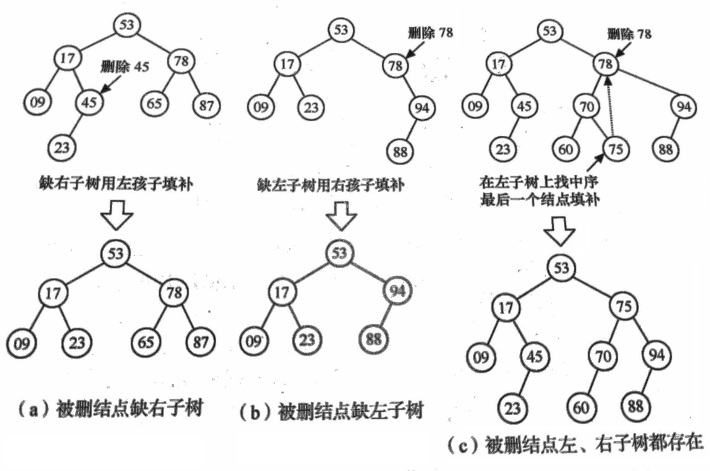
从二叉排序树的根结点开始查找关键字为 key 的待删结点，分三种情况讨论:
-
若待删结点为叶子结点，由于删除叶子结点不破坏树的整体结构，因此只需要修改其双亲的结点指向空即可。
-
若待删结点只有左子树或者只有右子树，只要使其左子树或右子树称为其双亲结点的左子树即可。
-
若待删结点的左右子树均不为空，为了保证删除该结点后，其他元素之间的相对位置不变，有以下两种方案:
- 使待删结点的左子树为其双亲结点的左子树，然后待删结点的右子树为其直接前驱的右子树
- 令待删结点的直接前驱代替待删结点，然后删除此结点的直接前驱
第二种方案图例如下:
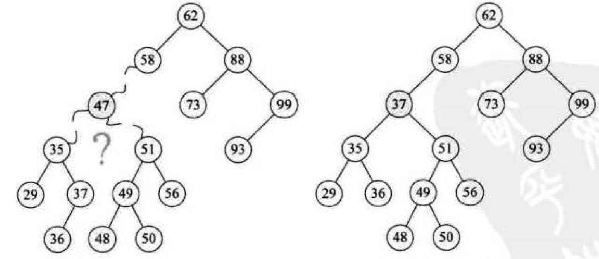
显然，前一种处理方法可能增加树的深度，而后一种方法是以被删结点左子树中关键字最大的结点(左子树中最大的结点一定没有右子树)代替被删结点，然后从左子树中删除这个结点，这种方法更好。
算法示例 链接到标题
void DeleteBST(BSTree &T,KeyType key){
//查找关键字值等于key的结点
p = T;
f = NULL; //f保存p的双亲结点
while(p){
if(p->data.key == key) break;
f = p;
if(p->data.key > key) p = p->lchild;
else p = p->rchild;
}
if(!p) return;
//被删结点的左右子树均不为空
q=p;
if((p->lchild) && (p->rchild)){
s = p->lchild; //找到被删结点的直接前驱
while(s->rchild){
q=s; //保存待删结点的直接前驱的双亲结点，用于重接
s=s->rchild;
}
p->data = s->data; //将待删结点的直接前驱来替换待删结点
if(q != p){
q->rchild = s->lchild; //重接q的右子树
}
else{
q->lchild = s->lchild; //重接q的左子树
}
delete s;
return;
}else if(!p->rchild){ //被删结点无右子树
p = p->lchild;
}else if(!p->lchild){ //被删结点无左子树
p = p->rchild;
}
//p指向的子树挂接到其双亲结点的对应位置
if(!f) T=p; //被删结点为根结点
else if(q == f->lchild) f->lchild = p;
else f->rchild = p;
delete q;
}
算法分析 链接到标题
二叉排序树删除的基本过程也是查找，所以算法时间复杂度为$O(log_2n)$.
平衡二叉树 链接到标题
二叉排序树查找算法的性能取决于树的结构，而树的结构取决于给定数据是否有序，对于有序的数据进行构造二叉排序树，树的结构会是一棵深度为数据长度的单支树，查找效率低，事实上，树的高度越小，查找效率越高，为了使二叉排序树的高度尽量小，前苏联数学家提出了平衡二叉树的概念，也称为 AVL 树。
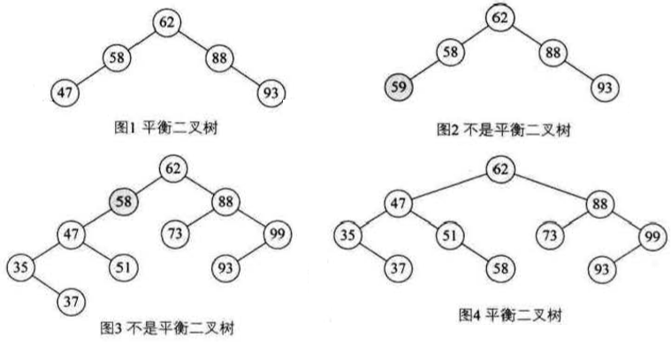
平衡二叉树或者是空树，或者是具有下列特征的二叉排序树:
- 左子树和右子树的深度之差的绝对值不超过 1
- 左子树和右子树也是平衡二叉树
- 平衡二叉树必须是二叉排序树
二叉树上结点的平衡因子定义为该结点左子树与右子树的深度只差。
AVL 的平衡调整方法 链接到标题
在二叉排序树构造的过程中，如果新加入的结点破环了平衡二叉树的特性，就需要对树进行调整，调整方法为: 找到离插入结点最近且平衡因子绝对值超过 1 的祖先结点，以该结点为根的子树称为最小不平衡子树，可将重新平衡的范围局限于这棵子树。
假设有一个数组 a[10]={3,2,1,4,5,6,7,10,9,8}需要构建二叉排序树，在没有了解二叉平衡树之前，根据二叉排序树的特性会构建成如下图 1 的样子，树的深度为 8，查找效率是很低的。当我们学了平衡二叉树之后会构建成如下图 2 的样子，树的深度只有 4，效率提高了一倍。
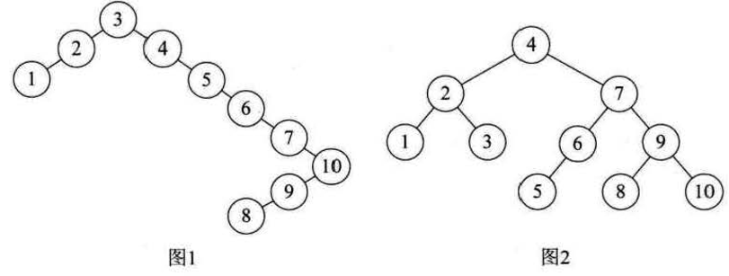
首先根据二叉排序树的特性插入结点”3”，然后再插入”2”，此时结点”3”的 bf 为 1，再插入”1”，此时结点”2”的 bf 值变为 2，如图 1 所示，树已经不平衡了所以需要调整树，因为 bf 值为正，所以需要将整个树进行右旋，此时结点”2”成为根结点，结点”3”成为 2 的右孩子，如图 2 所示，然后再插入结点”4”，bf 并没有发生改变。
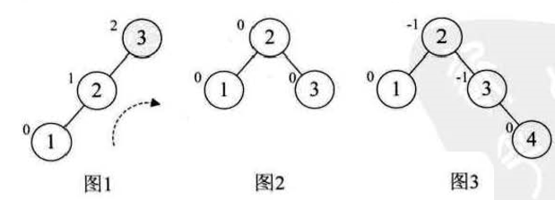
插入结点”5”之后，结点”3”,”4”,”5”组成了最小不平衡子树，此时结点”3”的 bf 值为-2，由于 bf 值是负值，所以需要对这棵最小不平衡子树进行左旋，如图 5，此时整棵树又达到平衡。
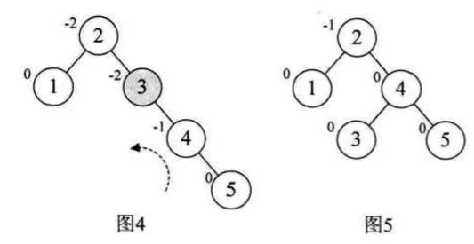
继续插入结点”6”，此时根结点”2”的 bf 值变为-2，所以需要对根结点进行左旋，但由于本来结点 3 是 4 的左孩子，旋转后需要满足二叉排序树的特性，因此它成了结点 2 的右孩子，如图 7 所示。
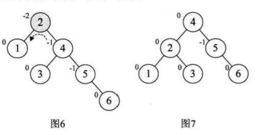
插入结点”7”,发现结点”5”的 bf 值为-2，左旋由结点”5”,”6”,”7”组成的最小不平衡子树，如图 9 所示，此时整棵树达到平衡。
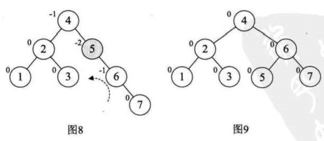
当插入结点”10”时，结构无变化 ，再增加结点”9”，此时结点”7”的 bf 值变为-2，理论上只需要旋转最小不平衡子树”7”,”9”,”10”即可，但左旋转后，结点”9”成了结点”10”的右孩子，不符合二叉排序树的特性，如下图所示
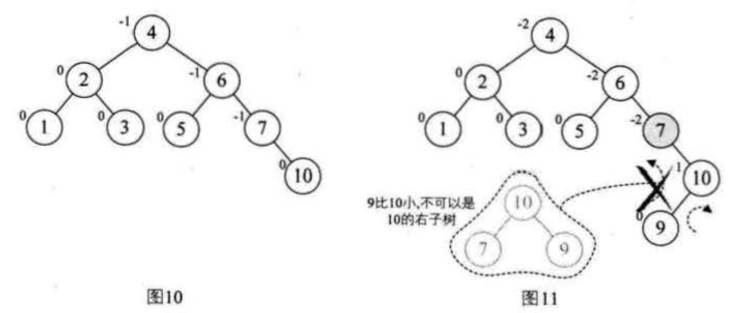
通过观察发现，结点”7”的 bf 值为-2，但结点”10”的 bf 值为 1，它们的 bf 值政府不统一，而前几次的旋转，最小不平衡子树的根结点和它的子结点符号都是相同的，因此需要先使符号统一，所以对结点”9”和结点”10”进行右旋，使结点”10”成为”9”的右子树，结点”9”的 bf 值为-1，此时不平衡子树的根结点与子结点符号统一，再对结点”7”进行左旋，得到图”13”，然后再加入结点”8”
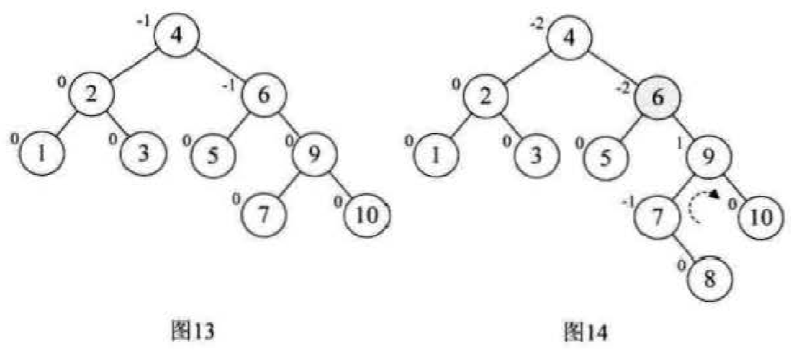
此时结点”6”的 bf 值为-2，结点”9”的 bf 值为 1，符号不统一，因此需要首先以 9 为根结点，进行右旋得到图 15，此时结点”6”与结点”7”的 bf 值都为负，再以 6 为根结点左旋，最终得到最后的平衡二叉树如图 16 所示
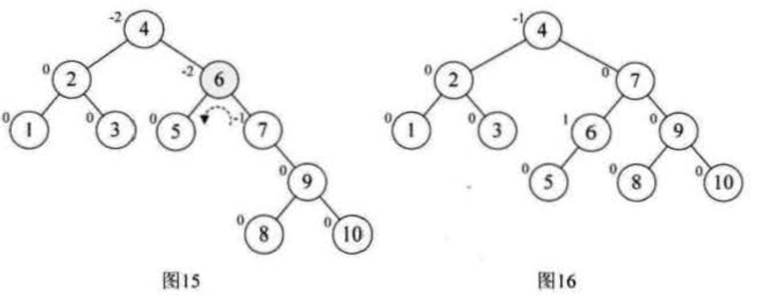
假设不平衡子树的根结点为 A
- 在 A 左子树根结点的左子树上插入结点，需要进行一次右旋
- 在 A 右子树根结点的右子树上插入结点，需要进行一次左旋
- 在 A 左子树根结点的右子树上插入结点，需要先对子树进行逆时针左旋使 bf 符号相同，然后再顺时针右旋。
- 在 A 右子树根结点的左子树上插入结点，需要先对子树进行顺时针右旋使 bf 符号相同，然后再逆时针左旋。
AVL 代码示例 链接到标题
存储结构代码示例 链接到标题
在树结点结构中增加一个 bf 代表平衡因子，平衡因子的绝对值如果大于 2，说明树不平衡，需要进行调整。
typedef struct BiTNode{
int data; //结点数据
int bf; //结点的平衡因子
struct BiTNode *lchild,*rchild; //左右孩子指针
}BiTNode,*BiTree;
旋转代码示例 链接到标题
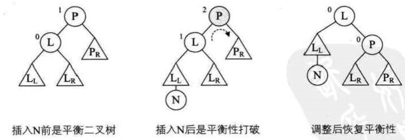
右旋操作时，当传入一个二叉排序树 p，将它的左孩子结点定义为 L，将 L 的右子树变成 p 的左子树，然后将 p 改为 L 的右子树，最后将 L 替换 p 成为根结点，这样就完成了一次右旋操作，如下图所示，N 为插入结点，左旋操作大同小异。
void R_Rotate(BiTree *p){ //右旋操作
BiTree L;
L = (*p)->lchild;
(*p)->lchild=L->rchild;
L->rchild = (*p);
*p = L;
}
void L_Rotate(BiTree *p){ //左旋操作
BiTree R;
R = (*p)->rchild;
(*p)->rchild = R->lchild;
R->lchild = (*p);
*p = R;
}
平衡调整代码示例 链接到标题
#define LH +1 //左高
#define EH 0 //等高
#define RH -1 //右高
void LeftBalance(BiTree *T){ //T是不平衡子树，对T进行左平衡旋转处理，且左子树高度大于右子树高度
BiTree L,Lr;
L = (*T)->lchild; //左孩子赋给L
switch(L->bf){
case LH: //新结点插入在T的左孩子的左子树上
(*T)->bf = L->bf = EH; //将bf值改为0
R_Rotate(T); //进行右旋操作
break;
case RH: //新结点插入在T的左孩子的右子树上
Lr = L->rchild;
//修改bf值
switch(Lr->bf){
case LH:
(*T)->bf = RH;
L->bf = EH;
break;
case EH:
(*T)->bf = L->bf = EH;
break;
case RH:
(*T)->bf = EH;
L->bf = LH;
break;
}
Lr->bf = EH;
//进行双旋操作，先对左子树左旋，再对根右旋
L_Rotate(&(*T)->lchild);
R_Rotate(T);
}
}
void RightBalance(BiTree *T){ //右平衡
BiTree R,Rr;
R = (*T)->rchild;
switch(R->bf){
case LH: //新结点插入在右孩子的右子树上
(*T)->bf = R->bf = EH;
L_Rotate(T); //左旋操作
break;
case RH: //新结点插入在右孩子的左子树上
Rr = R->lchild;
//修改bf值
switch(Rr->bf){
case LH:
(*T)->bf = RH;
R->bf = EH;
break;
case EH:
(*T)->bf = R->bf = EH;
break;
case RH:
(*T)->bf = EH;
R->bf = LH;
break;
}
Rr->bf = EH;
R_Rotate(&(*T)->rchild); //先右旋
L_Rotate(T); //再左旋
}
}
AVL 树的插入操作 链接到标题
//若在平衡二叉排序树中不存在和e有相同关键字的结点，则插入此结点。
//taller反映T长高与否
Status InsertAVL(BiTree *T,int e,Status *taller){
//创建根结点
if(!*T){
*T = (BiTree)malloc(sizeof(BiTNode));
(*T)->data = e;
(*T)->lchild = (*T)->rchild = NULL;
(*T)->bf = EH;
*taller = TRUE;
}
else{
if(e == (*T)->data){ //如果树中存在和e关键字相同的结点则插入失败
*taller = FALSE; //没长高
return FALSE;
}
if(e < (*T)->data){ //在T的左子树中搜索
if(!InsertAVL(&(*T)->lchild,e,taller)) return FALSE;
if(taller){ //已经插入T的左子树，且左子树长高
//检查T是否平衡
switch((*T)->bf){
case LH: //原本左高右低，先又增左，需要左平衡处理
LeftBalance(T);
*taller = FALSE;
break;
case EH: //原本等高，现在左子树增高，树也要增高
(*T)->bf = LH;
*taller = TRUE;
break;
case RH: //原本右高左低，现在等高
(*T)->bf = EH;
*taller = FALSE;
break;
}
}
}
else{ //在T的右子树中搜索
if(!InsertAVL(&(*T)->rchild,e,taller)) return FALSE;
if(*taller){
switch((*T)->bf){
case LH: //原本左高右低，现在等高
(*T)->bf = EH;
*taller = FALSE;
break;
case EH: //原本等高，现在右高，树也高
(*T)->bf = RH;
*taller = TRUE;
case RH: //原本右高，现在增右，需要右平衡处理
RightBalance(T);
*taller = FALSE;
break;
}
}
}
}
return TRUE;
}
// 测试代码
int main(){
int i;
int a[10] = {3,2,1,4,5,6,7,10,9,8};
BiTree T = NULL;
Status taller;
for(i = 0;i < 10;i++){
InsertAVL(&T,a[i],&taller);
}
return 0;
}
算法分析 链接到标题
因为 AVL 树上任何结点的左右子树深度之差不超过 1，因此其查找的时间复杂度为$O(log_2n)$.
多路查找树 链接到标题
之前介绍的查找方法用于存储在计算机内存中较小的文件，统称为内查找法。如果文件很大，且存放于外存进行查找，涉及到这样的外部存储设备，关于时间复杂度的计算会发生变化，需要考虑对硬盘等外部设备的访问时间以及访问次数，之前所谈的树，都是一个结点可以有多个孩子，但它自身只存储一个元素，在元素非常多时，树的度就会非常大，为此引入了多路查找树的概念。 多路查找树，其每一个结点的孩子数可以多于两个，且每一个结点处可以存储多个元素，由于它是查找树，所有元素之间存在某种特定的排序关系。
2-3 树 链接到标题
- 2-3 树其中每一个结点都能具有两个孩子(称为 2 结点)或者三个孩子(称为 3 结点)。
- 一个 2 结点包含一个元素和两个孩子(或无孩子)，且与二叉排序树类似 ，左子树包含的元素小于该元素，右子树包含的元素大于该元素，但结点只能有 2 或 3 个孩子，或者无孩子。
- 一个 3 结点包含一小一大两个元素和三个孩子(或无孩子)，左子树包含小于较小元素的元素，右子树包含大于较大元素的元素，中间子树包含介于两元素之间的元素。
2-3 树中所有的叶子都在同一层次，如下图所示:
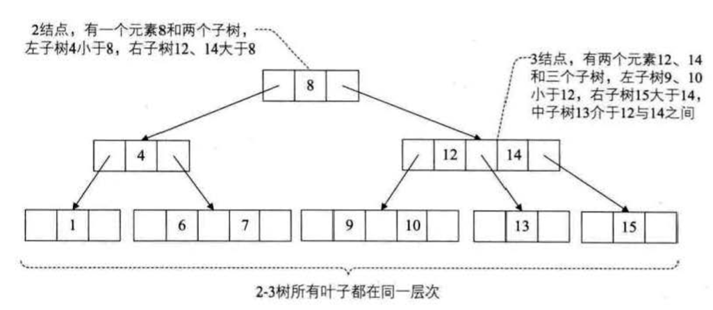
2-3 树的插入实现 链接到标题
2-3 树插入一个元素的过程可能会对该树的其余结点产生连锁反应。
- 对于空树，插入一个 2 结点即可
- 插入一个结点到一个 2 结点的叶子上，需要将其升级为 3 结点即可，如下图所示，将结点”3”插入结点”1”所在位置，需要将结点”1”升级为 3 结点。
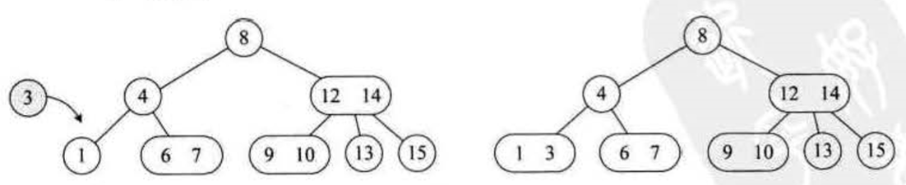
- 往 3 结点中插入一个新元素，因为 3 结点本身是最大容量，因此需要拆分。
如果要向左图插入元素”5”，它应该要插入到拥有 6、7 元素的 3 结点位置，但元素已满，无法添加，但其双亲结点是一个 2 结点，所以将其双亲升级为 3 结点，使 4、6 称为此结点的元素，”5”成为它的中间孩子，”7”为它的右孩子，如下图所示
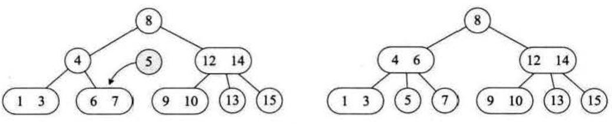
如果要插入结点和其双亲结点都为 3 结点，但其双亲的双亲结点”8”是个 2 结点，因此将 9、10 拆分，12、14 也拆分，结点”8”升级为 3 结点，如下图所示
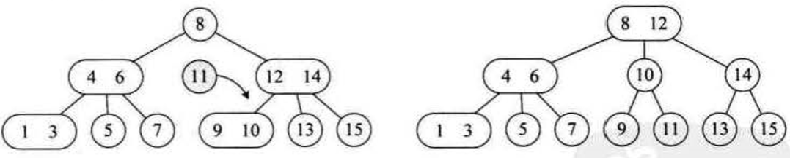
如果要插入结点和其之上所有双亲结点都是 3 结点，需要将 1、3 拆分，4、6 拆分，8、12 也拆分，形成如下图所示的树
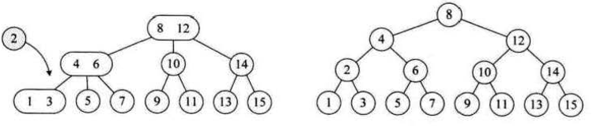
由此可见，2-3 树插入的传播效应导致了根结点的拆分，因此树的高度增加。
2-3 树的删除实现 链接到标题
- 所删元素位于一个 3 结点的叶子结点上，只需要在该结点处删除该元素即可，不影响树的整体结构，如下图所示

- 所删元素位于一个 2 结点上，但如果删除此结点，2 结点只拥有一个孩子，不满足定义，因此需要分为四种情况处理
此结点的双亲也是 2 结点，且拥有一个 3 结点的右孩子，删除结点 1 需要左旋处理，6 成为双亲，4 成为 6 的左孩子 17 是 6 的右孩子，如下图所示
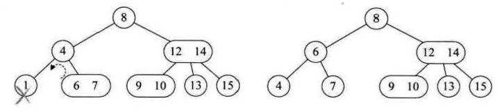
此结点的双亲是 2 结点，它的右孩子也是 2 结点，此时删除结点 1，如果直接左旋会造成没有右孩子，因此需要让结点 7 变成 3 结点，因此使元素 8 下来，让元素 9 补充 8 的位置，然后再用左旋的方式，如下图所示
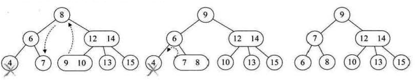
此结点的双亲是一个 3 结点，如果删除此结点，不满足 2-3 树的特性，因此需要将结点进行拆分，使 12、13 合并成为左孩子，如下图所示
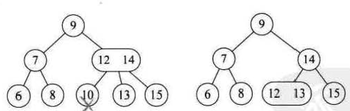
如果当前树是一个满二叉树，需要将 2-3 树的层数减少，将 8 的双亲和左子树 6 合并为一个 3 结点，将 14 和 9 合并为一个 3 结点，如下图所示
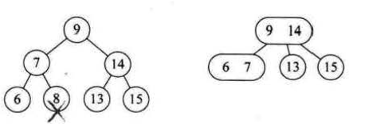
- 所删除的元素位于非叶子的分支结点，通常将树按中序遍历后得到此元素的前驱或后继元素，然后考虑让它们补位。
如果要删除的分支结点 4 是 2 结点，它的前驱是 1 后继是 6，由于 6、7 是 3 结点，所以需要用 6 来补位，如下图所示
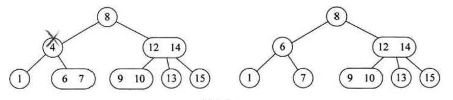
如果要删除的分支结点是 3 结点的某个元素，需要将 3 结点的左孩子 10 上升到删除位置合适，如下图所示
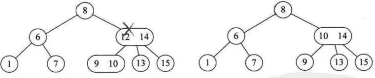
2-3 树的删除是有规律的，其他情况不一一解释。
2-3-4 树 链接到标题
2-3-4 树是 2-3 树的一个扩展，多了一个 4 结点的使用，一个 4 结点包含小中大三个元素和 4 个孩子(或无孩子)，一个 4 结点要么无孩子，要么具有 4 个孩子。
4 结点的左子树包含小于最小元素的元素，第二子树包含大于最小元素小于第二元素的元素，第三子树包含大于第二元素小于最大元素的元素，右子树包含大于最大元素的元素。
构建一个数组为{7,1,2,5,6,9,8,4,3}的 2-3-4 树的过程如下:
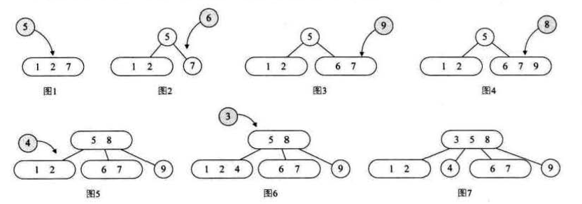
2-3-4 树的删除过程，删除顺序是 1、6、3、4、5、2、9
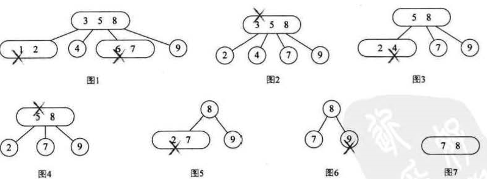
B-树 链接到标题
B-树(B-tree)是一种平衡的多路查找树，2-3 树与 2-3-4 树都是 B 树的特例，结点最大的孩子数目称为 B 树的阶，因此 2-3 树是 3 阶 B 树，2-3-4 树是 4 阶 B 树。
B-树的定义 链接到标题
一棵 m 阶的 B-树，或为空树，或为满足下列性质的 m 叉树:
- 若根结点不是叶子结点，则至少有两棵子树
- 一个非根的分支结点都有 k-1 个元素和 k 个孩子，其中[m/2]≤k≤m，每个叶子结点 n 都有 k-1 个元素，其中[m/2]≤k≤m.
- 所有的叶子结点都出现在同一层次上，并且不带信息，通常称为失败结点(失败结点不存在，指向其指针为空，引入失败结点便于分析 B-树的查找性能)
- 所有分支结点包含下列信息(n,A0,K1,A1,K2,A2…Kn,An)，其中 Ki(i=1,2,…,n)为关键字，且 Ki<Ki+1，Ai(i=0,1,2,..,n)为指向子树根结点的指针，且指针 Ai−1 所指子树中所有结点的关键字均小于 Ki(i=1,2,…,n)，An 所指子树中所有结点的关键字均大于 Kn，n([m/2]−1≤n≤m−1)为关键字的个数(或 n+1 为子树的个数)。
下图为一个 4 阶的 B-树
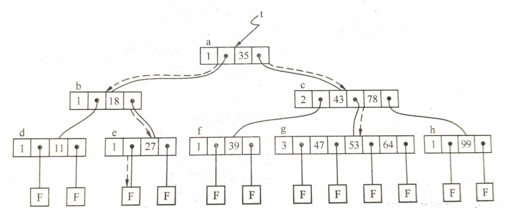
B-树的查找 链接到标题
在一个典型的 B-树应用中，要处理的硬盘数据量很大，因此无法一次全部装入内存。因此我们会对 B-树进行调整，使得 B-树的阶数(或结点的元素)与硬盘存储的页面大小相匹配。
例如一棵 B-树的阶为 1001(即 1 个结点包含 1000 个关键字)，高度为 2，它可以储存超过 10 亿个关键字，我们只要让根结点持久地保留在内存中，那么在这棵树上，寻找某一个关键字至多需要两次硬盘的读取即可。
最坏情况下，对于 n 个关键字的 m 阶 B 树，第一层至少有 1 个结点，由于除根结点外每个分支结点至少有[m/2]棵子树，则第三层至少有 2×[m/2]个结点，第 k+1 层至少有 2×([m/2])k−1 个结点，也就是叶子结点，若 m 阶 B-树有 n 个关键字，因此 n+1≥2×[m/2],即在含有 n 个关键字的 B 树上查找时，从根结点到关键字结点的路径上涉及的结点数不超过$k≤log_{m/2}(n+1)/2+1$
B+ 树 链接到标题
对于树结构来说，可以用中序遍历来顺序查找树中的元素，但在 B 树结构中，往返于每个结点之间，也就是在硬盘的页面之间进行多次访问，如下图所示，假设每个结点都属于不同的页面，中序遍历所有元素时需要重复访问页面 1，为了让遍历时每个元素只访问一次，所以在原有的 B 树结构基础上，加了新的元素组织方式，称为 B+ 树。
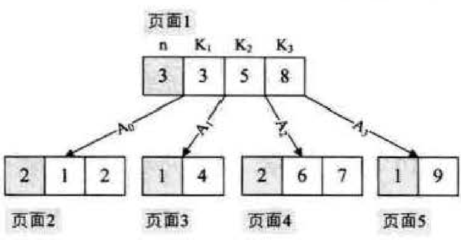
B+ 树是一种 B-树的变形树,更适用于文件索引系统，但它已经不算是定义的树了，如下图所示，灰色关键字即是根结点中的关键字在叶子结点再次列出，所有叶子结点都链接在一起。
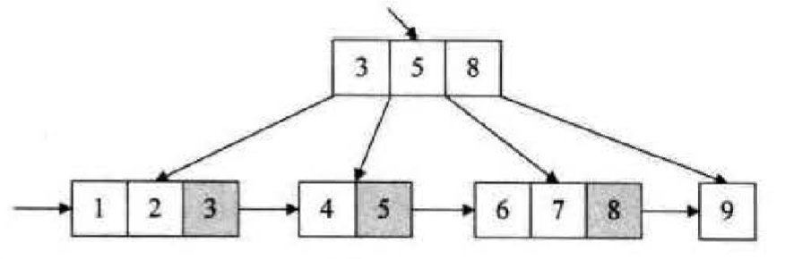
B+ 树与 B-树的差异 链接到标题
- 有 n 棵子树的结点中包含 n 个关键字
- 所有叶子结点包含全部关键字的信息，及指向含这些关键字记录的指针，叶子结点本身依关键字的大小自小而大顺序链接
- 所有分支结点可以看成是索引，结点中仅含有其子树中的最大(或最小)关键字。
B+ 树的优点 链接到标题
如果要随机查找，从根结点出发与 B-树查找方式相同，但即使在分支结点找到了待查的关键字，也是用来索引的，不能提供实际记录的访问，还是需要到达包含此关键字的终端结点。
如果从最小关键字进行从小到大顺序查找，可以从最左侧的叶子结点出发，不经过分支结点，而是沿着指向下一叶子的指针即可遍历所有关键字。
B+ 树不仅能有效查找单个关键字，而且更适合查找某个范围内的所有关键字。